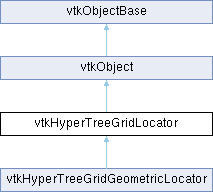

|
Etrek
|
|
Etrek
|
abstract base class for objects that implement accelerated searches through HyperTree Grids (HTGs) More...
#include <vtkHyperTreeGridLocator.h>

Public Member Functions | |
| vtkTypeMacro (vtkHyperTreeGridLocator, vtkObject) | |
| void | PrintSelf (ostream &os, vtkIndent indent) override |
| virtual vtkHyperTreeGrid * | GetHTG () |
| virtual void | SetHTG (vtkHyperTreeGrid *) |
| virtual void | Initialize () |
| virtual void | Update () |
| virtual vtkIdType | Search (const double point[3])=0 |
| virtual vtkIdType | FindCell (const double point[3], double tol, vtkGenericCell *cell, int &subId, double pcoords[3], double *weights)=0 |
| virtual int | IntersectWithLine (const double p0[3], const double p1[3], double tol, double &t, double x[3], double pcoords[3], int &subId, vtkIdType &cellId, vtkGenericCell *cell)=0 |
| virtual int | IntersectWithLine (const double p0[3], const double p1[3], double tol, vtkPoints *points, vtkIdList *cellIds, vtkGenericCell *cell)=0 |
| vtkSetMacro (Tolerance, double) | |
| vtkGetMacro (Tolerance, double) | |
| Public Member Functions inherited from vtkObject | |
| vtkBaseTypeMacro (vtkObject, vtkObjectBase) | |
| virtual void | DebugOn () |
| virtual void | DebugOff () |
| bool | GetDebug () |
| void | SetDebug (bool debugFlag) |
| virtual void | Modified () |
| virtual vtkMTimeType | GetMTime () |
| void | PrintSelf (ostream &os, vtkIndent indent) override |
| void | RemoveObserver (unsigned long tag) |
| void | RemoveObservers (unsigned long event) |
| void | RemoveObservers (const char *event) |
| void | RemoveAllObservers () |
| vtkTypeBool | HasObserver (unsigned long event) |
| vtkTypeBool | HasObserver (const char *event) |
| vtkTypeBool | InvokeEvent (unsigned long event) |
| vtkTypeBool | InvokeEvent (const char *event) |
| std::string | GetObjectDescription () const override |
| unsigned long | AddObserver (unsigned long event, vtkCommand *, float priority=0.0f) |
| unsigned long | AddObserver (const char *event, vtkCommand *, float priority=0.0f) |
| vtkCommand * | GetCommand (unsigned long tag) |
| void | RemoveObserver (vtkCommand *) |
| void | RemoveObservers (unsigned long event, vtkCommand *) |
| void | RemoveObservers (const char *event, vtkCommand *) |
| vtkTypeBool | HasObserver (unsigned long event, vtkCommand *) |
| vtkTypeBool | HasObserver (const char *event, vtkCommand *) |
| template<class U, class T> | |
| unsigned long | AddObserver (unsigned long event, U observer, void(T::*callback)(), float priority=0.0f) |
| template<class U, class T> | |
| unsigned long | AddObserver (unsigned long event, U observer, void(T::*callback)(vtkObject *, unsigned long, void *), float priority=0.0f) |
| template<class U, class T> | |
| unsigned long | AddObserver (unsigned long event, U observer, bool(T::*callback)(vtkObject *, unsigned long, void *), float priority=0.0f) |
| vtkTypeBool | InvokeEvent (unsigned long event, void *callData) |
| vtkTypeBool | InvokeEvent (const char *event, void *callData) |
| virtual void | SetObjectName (const std::string &objectName) |
| virtual std::string | GetObjectName () const |
| Public Member Functions inherited from vtkObjectBase | |
| const char * | GetClassName () const |
| virtual vtkTypeBool | IsA (const char *name) |
| virtual vtkIdType | GetNumberOfGenerationsFromBase (const char *name) |
| virtual void | Delete () |
| virtual void | FastDelete () |
| void | InitializeObjectBase () |
| void | Print (ostream &os) |
| void | Register (vtkObjectBase *o) |
| virtual void | UnRegister (vtkObjectBase *o) |
| int | GetReferenceCount () |
| void | SetReferenceCount (int) |
| bool | GetIsInMemkind () const |
| virtual void | PrintHeader (ostream &os, vtkIndent indent) |
| virtual void | PrintTrailer (ostream &os, vtkIndent indent) |
| virtual bool | UsesGarbageCollector () const |
Protected Attributes | |
| vtkWeakPointer< vtkHyperTreeGrid > | HTG |
| double | Tolerance = 0.0 |
| Protected Attributes inherited from vtkObject | |
| bool | Debug |
| vtkTimeStamp | MTime |
| vtkSubjectHelper * | SubjectHelper |
| std::string | ObjectName |
| Protected Attributes inherited from vtkObjectBase | |
| std::atomic< int32_t > | ReferenceCount |
| vtkWeakPointerBase ** | WeakPointers |
Additional Inherited Members | |
| Static Public Member Functions inherited from vtkObject | |
| static vtkObject * | New () |
| static void | BreakOnError () |
| static void | SetGlobalWarningDisplay (vtkTypeBool val) |
| static void | GlobalWarningDisplayOn () |
| static void | GlobalWarningDisplayOff () |
| static vtkTypeBool | GetGlobalWarningDisplay () |
| Static Public Member Functions inherited from vtkObjectBase | |
| static vtkTypeBool | IsTypeOf (const char *name) |
| static vtkIdType | GetNumberOfGenerationsFromBaseType (const char *name) |
| static vtkObjectBase * | New () |
| static void | SetMemkindDirectory (const char *directoryname) |
| static bool | GetUsingMemkind () |
| Protected Member Functions inherited from vtkObject | |
| void | RegisterInternal (vtkObjectBase *, vtkTypeBool check) override |
| void | UnRegisterInternal (vtkObjectBase *, vtkTypeBool check) override |
| void | InternalGrabFocus (vtkCommand *mouseEvents, vtkCommand *keypressEvents=nullptr) |
| void | InternalReleaseFocus () |
| Protected Member Functions inherited from vtkObjectBase | |
| virtual void | ReportReferences (vtkGarbageCollector *) |
| vtkObjectBase (const vtkObjectBase &) | |
| void | operator= (const vtkObjectBase &) |
| Static Protected Member Functions inherited from vtkObjectBase | |
| static vtkMallocingFunction | GetCurrentMallocFunction () |
| static vtkReallocingFunction | GetCurrentReallocFunction () |
| static vtkFreeingFunction | GetCurrentFreeFunction () |
| static vtkFreeingFunction | GetAlternateFreeFunction () |
abstract base class for objects that implement accelerated searches through HyperTree Grids (HTGs)
The goal of this abstract class is to define an interface to helper objects that implement optimized search methods through vtkHyperTreeGrids. This class is heavily inspired from the vtkLocator interface but constructed to be compatible with vtkHyperTreeGrids (which are not vtkDataSets at the time of this implementation). Ideally, implementations of this interface leverage the specific structure of HyperTrees and HyperTreeGrids to deliver accelerated search algorithms through their data.
As a side comment: ideally we would inherit from vtkLocator which only supports vtkDataSets right now. Hopefully in the future vtkHyperTreeGrid will become a vtkDataSet or vtkCompositeDataSet and we could accomplish just that with minimal refactoring.
|
pure virtual |
Pure virtual. Find the cell where a given point lies
| [in] | point | an array holding the coordinates of the point to search for |
| [in] | tol | tolerance level |
| [out] | cell | pointer to a cell configured with information from return value cell index |
| [out] | subId | index of the sub cell if composite cell |
| [out] | pcoords | parametric coordinates of the point in the cell |
| [out] | weights | interpolation weights of the sought point in the cell |
Implemented in vtkHyperTreeGridGeometricLocator.
|
virtual |
Getter/Setter methods for setting the vtkHyperTreeGrid
|
inlinevirtual |
Initialize or reinitialize the locator (setting or re-setting clean objects in memory) (Does nothing)
|
pure virtual |
Pure virtual. Find first intersection of the line defined by (p0, p1) with the HTG
| [in] | p0 | first point of the line |
| [in] | p1 | second point of the line |
| [in] | tol | tolerance level |
| [out] | t | pseudo-time along line path at intersection |
| [out] | x | intersection point |
| [out] | pcoords | parametric coordinatesof intersection |
| [out] | subId | index of the sub cell if composite cell |
| [out] | cellId | the global index of the intersected cell |
| [out] | cell | pointer to a vtkCell object corresponding to cellId |
Implemented in vtkHyperTreeGridGeometricLocator.
|
pure virtual |
Pure virtual. Find all intersections of the line defined by (p0, p1) with the HTG
| [in] | p0 | first point of the line |
| [in] | p1 | second point of the line |
| [in] | tol | tolerance level |
| [out] | points | array of points on the line intersecting the HTG |
| [out] | cellIds | array of cellIds holding the different points of the points array |
| [out] | cell | pointer to a vtkCell object corresponding to the last cellId found |
Implemented in vtkHyperTreeGridGeometricLocator.
|
overridevirtual |
Methods invoked by print to print information about the object including superclasses. Typically not called by the user (use Print() instead) but used in the hierarchical print process to combine the output of several classes.
Reimplemented from vtkObjectBase.
|
pure virtual |
Basic search for cell holding a given point
| point | coordinated of sought point |
Implemented in vtkHyperTreeGridGeometricLocator.
|
virtual |
Reimplemented in vtkHyperTreeGridGeometricLocator.
|
virtual |
Update the locator's internal variables with respect to changes that could have happened outside.
| vtkHyperTreeGridLocator::vtkSetMacro | ( | Tolerance | , |
| double | ) |
Get/Set tolerance used when searching for cells in the HTG. Default is 0.0
|
protected |
Internal reference to the HyperTreeGrid one wants to search over